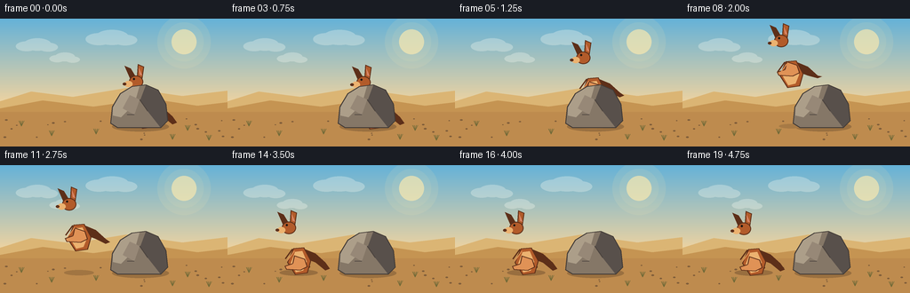
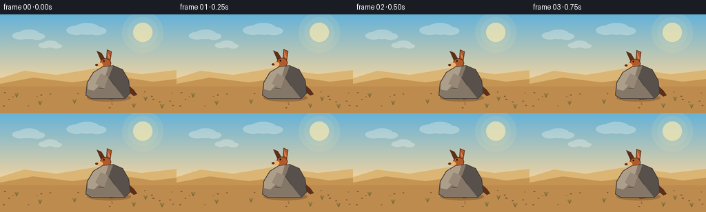

CODING AGENTS AS PIXEL WORLD MODELS
traex/Seed-2.1-Pro-0915 · dynamic_spatial_relationship_0035
点击播放 · 原生 RGB 像素
逐轮保存的候选
回放视频、检查图与代码变化。
每份候选均可单独播放。实际图片检查记录在下方工具轨迹中。
候选 01播放与检查图
点击播放 · 原生 RGB 像素


展开代码变化
--- 上一保存版本
+++ 本次保存版本
@@ -0,0 +1,281 @@
+"""Procedural text-to-video renderer for the kangaroo-and-rock prompt."""
+
+from __future__ import annotations
+
+from pathlib import Path
+
+import numpy as np
+from PIL import Image, ImageDraw
+
+import artifact_io
+
+WIDTH, HEIGHT, FRAME_COUNT, FPS = 256, 144, 20, 4.0
+SUPERSAMPLE = 4
+W, H, S = WIDTH * SUPERSAMPLE, HEIGHT * SUPERSAMPLE, SUPERSAMPLE
+
+SKY_TOP = np.array([101, 178, 216], dtype=np.float32)
+SKY_HORIZON = np.array([247, 213, 157], dtype=np.float32)
+GROUND_NEAR = np.array([166, 116, 62], dtype=np.float32)
+GROUND_FAR = np.array([205, 160, 94], dtype=np.float32)
+
+FUR = (178, 91, 42)
+FUR_LIGHT = (224, 146, 86)
+FUR_DARK = (93, 47, 25)
+BELLY = (236, 178, 112)
+INNER_EAR = (215, 132, 101)
+ROCK = (133, 119, 103)
+ROCK_LIGHT = (172, 158, 137)
+ROCK_DARK = (88, 80, 75)
+ROCK_OUTLINE = (65, 58, 54)
+
+
+def sc(value: float) -> int:
+ return int(round(value * S))
+
+
+def pts(values: list[tuple[float, float]]) -> list[tuple[int, int]]:
+ return [(sc(x), sc(y)) for x, y in values]
+
+
+def box(x0: float, y0: float, x1: float, y1: float) -> tuple[int, int, int, int]:
+ return sc(x0), sc(y0), sc(x1), sc(y1)
+
+
+def polygon(draw: ImageDraw.ImageDraw, vertices, fill, outline=None, width: int = 1):
+ draw.polygon(pts(vertices), fill=fill, outline=outline, width=sc(width))
+
+
+def ellipse(draw: ImageDraw.ImageDraw, bounds, fill, outline=None, width: int = 1):
+ draw.ellipse(box(*bounds), fill=fill, outline=outline, width=sc(width))
+
+
+def line(draw: ImageDraw.ImageDraw, start, end, fill, width: float = 1.0):
+ draw.line(pts([start, end]), fill=fill, width=sc(width), joint="curve")
+
+
+def make_background() -> Image.Image:
+ """Create the stable desert background at supersampled resolution."""
+ horizon = sc(101)
+ y = np.arange(H, dtype=np.float32)[:, None]
+
+ sky_mix = np.clip(y / horizon, 0.0, 1.0)
+ sky = SKY_TOP * (1.0 - sky_mix) + SKY_HORIZON * sky_mix
+
+ ground_mix = np.clip((y - horizon) / max(1, H - horizon), 0.0, 1.0)
+ ground = GROUND_FAR * (1.0 - ground_mix) + GROUND_NEAR * ground_mix
+
+ pixels = np.repeat(sky[:, None, :], W, axis=1)
+ pixels[horizon:] = np.repeat(ground[horizon:, None, :], W, axis=1)
+ image = Image.fromarray(pixels.astype(np.uint8), "RGB")
+
+ # Soft sun and a few restrained clouds.
+ glow = Image.new("RGBA", (W, H), (0, 0, 0, 0))
+ glow_draw = ImageDraw.Draw(glow)
+ sx, sy = sc(207), sc(26)
+ for radius, alpha in ((30, 28), (22, 48), (14, 180)):
+ glow_draw.ellipse(
+ (sx - sc(radius), sy - sc(radius), sx + sc(radius), sy + sc(radius)),
+ fill=(255, 235, 174, alpha),
+ )
+ for (cx, cy), radius in [((42, 29), 22), ((126, 21), 27), ((73, 43), 16)]:
+ for dx, dy, rr in [
+ (-radius * 0.55, 2, radius * 0.55),
+ (0, 0, radius * 0.7),
+ (radius * 0.55, 3, radius * 0.5),
+ ]:
+ glow_draw.ellipse(
+ box(cx + dx - rr, cy + dy - rr * 0.45, cx + dx + rr, cy + dy + rr * 0.45),
+ fill=(255, 255, 245, 72),
+ )
+ image = Image.alpha_composite(image.convert("RGBA"), glow).convert("RGB")
+ draw = ImageDraw.Draw(image)
+
+ # Layered dunes give the low-resolution frame a readable sense of depth.
+ polygon(
+ draw,
+ [(0, 93), (35, 82), (82, 88), (142, 78), (205, 87), (256, 81), (256, 104), (0, 104)],
+ (219, 181, 116),
+ )
+ polygon(
+ draw,
+ [(0, 101), (48, 92), (105, 99), (169, 90), (222, 98), (256, 94), (256, 108), (0, 108)],
+ (197, 148, 82),
+ )
+ polygon(draw, [(0, 105), (256, 105), (256, 144), (0, 144)], (190, 139, 78))
+
+ rng = np.random.default_rng(7)
+ for _ in range(24):
+ x = float(rng.uniform(4, 252))
+ y0 = float(rng.uniform(108, 139))
+ if 117 < x < 196 and y0 < 128:
+ continue
+ radius = float(rng.uniform(0.7, 1.8))
+ ellipse(draw, (x - radius, y0 - radius * 0.55, x + radius, y0 + radius * 0.55), (127, 93, 58))
+
+ for x, y0 in [(24, 121), (58, 132), (108, 130), (211, 126), (235, 137), (194, 136)]:
+ for angle in (-0.55, -0.18, 0.24, 0.62):
+ line(draw, (x, y0), (x + angle * 5.0, y0 - 6.0), (111, 105, 55), 0.8)
+ return image
+
+
+def draw_rock(draw: ImageDraw.ImageDraw) -> None:
+ rock_points = [
+ (124, 118), (126, 99), (135, 84), (148, 76), (164, 74),
+ (178, 80), (187, 96), (189, 115), (181, 123), (132, 123),
+ ]
+ polygon(draw, rock_points, ROCK)
+ polygon(
+ draw,
+ [(127, 100), (135, 84), (148, 76), (157, 75), (151, 96), (136, 111), (127, 109)],
+ ROCK_LIGHT,
+ )
+ polygon(
+ draw,
+ [(164, 75), (178, 80), (187, 96), (189, 115), (181, 123), (166, 104), (158, 91)],
+ ROCK_DARK,
+ )
+ polygon(draw, [(146, 86), (157, 91), (151, 108), (138, 101)], (151, 136, 119))
+ line(draw, (157, 91), (166, 104), (76, 68, 63), 1.0)
+ line(draw, (143, 108), (151, 108), (76, 68, 63), 0.8)
+ polygon(draw, rock_points, None, outline=ROCK_OUTLINE, width=1)
+
+
+def draw_kangaroo(
+ draw: ImageDraw.ImageDraw,
+ cx: float,
+ ground_y: float,
+ lift: float,
+ airborne: float,
+) -> None:
+ """Draw a left-facing kangaroo. Positive cx values point toward its tail."""
+ base_y = ground_y - lift
+ foot_y = base_y - 8.0 * airborne
+ tail_tip_y = base_y - 1.0 - 6.0 * airborne
+
+ # Tail and far hind leg sit behind the torso.
+ polygon(
+ draw,
+ [
+ (cx + 7, base_y - 25), (cx + 19, base_y - 20),
+ (cx + 30, base_y - 10), (cx + 35, tail_tip_y - 2),
+ (cx + 30, tail_tip_y), (cx + 19, base_y - 10),
+ (cx + 6, base_y - 15),
+ ],
+ FUR_DARK,
+ outline=FUR_DARK,
+ )
+ polygon(
+ draw,
+ [
+ (cx - 1, foot_y - 17), (cx + 8, foot_y - 14),
+ (cx + 13, foot_y - 5), (cx + 9, foot_y - 1),
+ (cx - 6, foot_y - 1), (cx - 10, foot_y - 8),
+ ],
+ FUR_DARK,
+ outline=FUR_DARK,
+ )
+
+ body = [
+ (cx - 6, base_y - 26), (cx + 6, base_y - 27),
+ (cx + 14, base_y - 12), (cx + 10, base_y + 2),
+ (cx - 4, base_y + 4), (cx - 13, base_y - 10),
+ ]
+ polygon(draw, body, FUR, outline=FUR_DARK)
+ polygon(
+ draw,
+ [
+ (cx - 4, base_y - 22), (cx + 4, base_y - 23),
+ (cx + 9, base_y - 11), (cx + 5, base_y - 1),
+ (cx - 3, base_y + 1), (cx - 9, base_y - 9),
+ ],
+ BELLY,
+ )
+
+ # Near hind leg and long foot.
+ polygon(
+ draw,
+ [
+ (cx - 5, foot_y - 18), (cx + 7, foot_y - 14),
+ (cx + 10, foot_y - 5), (cx + 2, foot_y - 1),
+ (cx - 14, foot_y - 2), (cx - 16, foot_y - 6),
+ (cx - 7, foot_y - 9),
+ ],
+ FUR_LIGHT,
+ outline=FUR_DARK,
+ )
+
+ # Small forearms.
+ line(draw, (cx - 7, base_y - 25), (cx - 15, base_y - 14), FUR_DARK, 1.6)
+ line(draw, (cx - 5, base_y - 23), (cx - 13, base_y - 12), FUR_LIGHT, 1.1)
+
+ head_x, head_y = cx - 11, base_y - 49
+ ear_back = [
+ (head_x - 6, head_y - 2), (head_x - 13, head_y - 18),
+ (head_x - 6, head_y - 15), (head_x, head_y - 5),
+ ]
+ ear_front = [
+ (head_x + 1, head_y - 5), (head_x + 2, head_y - 20),
+ (head_x + 9, head_y - 17), (head_x + 7, head_y - 3),
+ ]
+ polygon(draw, ear_back, FUR_DARK, outline=FUR_DARK)
+ polygon(draw, ear_front, FUR, outline=FUR_DARK)
+ polygon(
+ draw,
+ [(head_x + 3, head_y - 16), (head_x + 4, head_y - 8), (head_x + 7, head_y - 7)],
+ INNER_EAR,
+ )
+ ellipse(draw, (head_x - 8, head_y - 7, head_x + 8, head_y + 7), FUR, outline=FUR_DARK)
+ ellipse(draw, (head_x - 13, head_y - 1, head_x - 4, head_y + 6), BELLY)
+ ellipse(draw, (head_x - 15, head_y + 1, head_x - 11, head_y + 4), FUR_DARK)
+ ellipse(draw, (head_x - 3.5, head_y - 4.2, head_x - 1.2, head_y - 1.9), (27, 22, 18))
+
+
+def render_frame(background: Image.Image, index: int) -> np.ndarray:
+ image = background.copy().convert("RGBA")
+ draw = ImageDraw.Draw(image)
+
+ if index <= 3:
+ x = 164.0
+ lift = 0.7 * np.sin(index * np.pi / 2.0)
+ airborne = 0.0
+ elif index <= 13:
+ q = (index - 3) / 10.0
+ progress = q * q * (3.0 - 2.0 * q)
+ x = 164.0 - 84.0 * progress
+ airborne = float(np.sin(np.pi * q))
+ lift = 46.0 * airborne
+ else:
+ x = 80.0
+ lift = 0.7 * np.sin((index - 13) * 0.9)
+ airborne = 0.0
+
+ shadows = Image.new("RGBA", (W, H), (0, 0, 0, 0))
+ shadow_draw = ImageDraw.Draw(shadows)
+ shadow_draw.ellipse(box(126, 116, 190, 127), fill=(62, 43, 27, 72))
+ shadow_width = 43.0 - 16.0 * airborne
+ shadow_height = 7.0 - 2.0 * airborne
+ shadow_alpha = int(76 - 30 * airborne)
+ shadow_draw.ellipse(
+ box(x - shadow_width / 2, 121 - shadow_height / 2, x + shadow_width / 2, 121 + shadow_height / 2),
+ fill=(62, 43, 27, shadow_alpha),
+ )
+ image = Image.alpha_composite(image, shadows)
+ draw = ImageDraw.Draw(image)
+
+ draw_kangaroo(draw, x, 120.0, lift, airborne)
+ draw_rock(draw)
+
+ final = image.convert("RGB").resize((WIDTH, HEIGHT), Image.Resampling.LANCZOS)
+ return np.asarray(final, dtype=np.uint8)
+
+
+def main() -> None:
+ case_dir = Path(__file__).resolve().parent
+ background = make_background()
+ frames = np.stack([render_frame(background, i) for i in range(FRAME_COUNT)], axis=0)
+ artifact_io.save(frames, case_dir)
+ print(f"Saved {frames.shape[0]} RGB frames at {WIDTH}x{HEIGHT} and {FPS} fps")
+
+
+if __name__ == "__main__":
+ main()
可观测工具轨迹
实际执行的命令与返回图片。
命令 1exit 0
/bin/bash -lc 'cat prompt.txt GENERATION_RULES.md task_spec.json'
命令 2exit 0
/bin/bash -lc "ls -la && rg --files -g '"'!*'"' | head -50 && python - <<'PY' import inspect, os try: import artifact_io print(artifact_io.__file__) print(inspect.getsource(artifact_io.save)) except Exception as e: print(type(e).__name__, e) PY"
命令 3exit 0
/bin/bash -lc "git status --short && python - <<'PY'
from PIL import Image, ImageDraw, ImageFilter
import numpy as np
print('PIL/numpy ready')
PY"命令 4exit 1
/bin/bash -lc "python generate.py && find . -maxdepth 2 -type f \\( -name 'pixels.npz' -o -name 'inspection.png' -o -name 'index.html' -o -name '*.png' \\) | sort | head -30 && python - <<'PY'
import numpy as np
from pathlib import Path
p=np.load('pixels.npz')['pixels']
print('packed shape:', p.shape, 'dtype:', p.dtype)
frames=np.stack([((p[...,i]>>16)&255, (p[...,i]>>8)&255, p[...,i]&255)],axis=-1).squeeze(0)
print('frames:', frames.shape, frames.dtype, 'min/max:', frames.min(), frames.max())
for i in [0,3,8,13,19]:
print(i, 'mean RGB:', frames[i].mean(axis=(0,1)).round(2), 'unique:', len(np.unique(frames[i].reshape(-1,3),axis=0)))
PY"保存候选 1 份；完成命令 4 次；可验证图片返回 0 张。原始 API 响应与完整日志保留在本地。